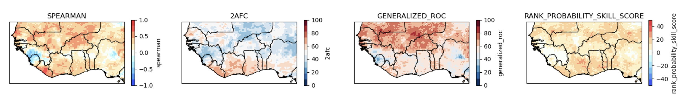
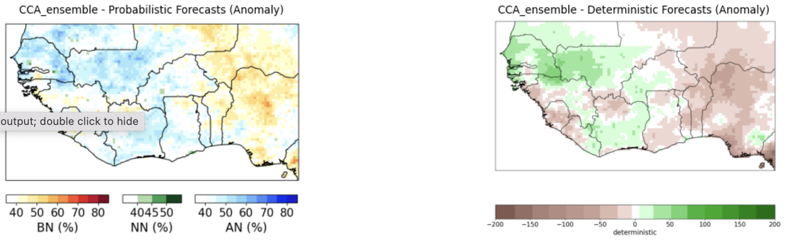
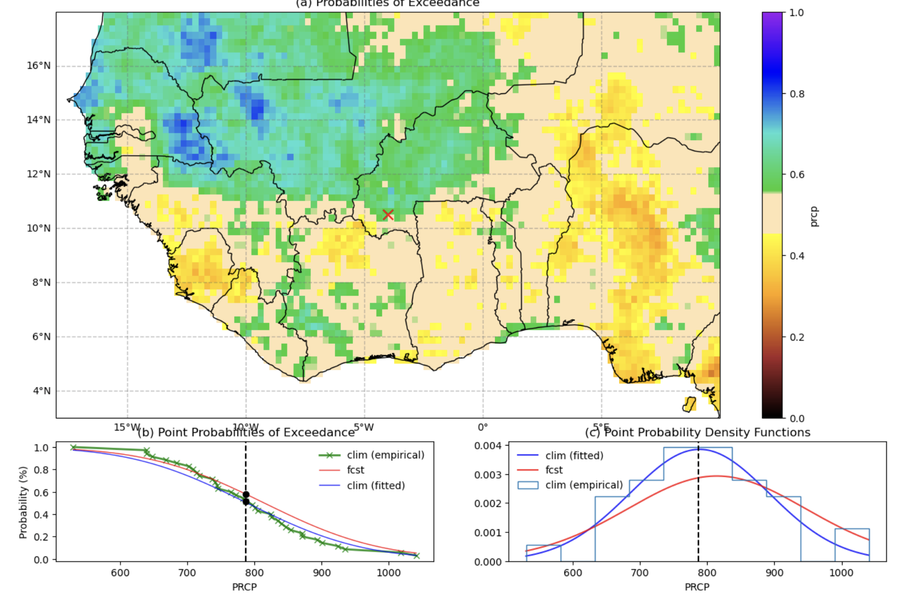

The multimodel NextGen ensemble#
First we need to select a subset of GCMs to include in the MME. Factors to consider are:
deterministic skill maps for the individual models: All skill scores should be generally positive across the map
their CCA/EOF modes: The CCA modes of each model should be physically interpretable and the CC coefficient should generally be about 0.4 or more.
the forecast maps: Any differences in polarity between models should be confirmed by looking at the global maps from the NMME and C3S websites.
Although the CFSv2 model skill is low in our West African example, we will still include it in our two-model MME for demonstration purposes.
ensemble = ['CFSv2.PRCP','SEAS5.PRCP']
The MME is constructed as the unweighted average of forecasts or hindcasts of the individual models. This is done for the deterministic values as well as for the tercile-category probabilities, in order to create both multi-model deterministic and probabilistic hindcasts and forecasts. The prediction error variances are also averaged across models in order to compute the spread of the MME flexible forecasts (see below).
1. Plot MME Hindcast Skill#
The multi-model deterministic and probabilistic hindcasts are evaluated using a suite of skill metrics using CPT’s GCM Validation and Probabilistic Forecast Verification procedures.
Tip
To see all the skill scores available, insert a new cell in the Notebook (before the plotting cell) and type nextgen_skill. You will see an xarray dataset that contains all the skill scores available for the MME hindcasts.
We will select four skill metrics, two deterministic (Spearman and 2AFC) and two probabilistic (GROC and RPSS).
skill_metrics = ['spearman','2afc', 'generalized_roc', 'rank_probability_skill_score']
Comparing the two deterministic measures with the individual model maps, the MME Spearman correlation is generally positive and it slightly enhanced compared to the better individual model (SEAS5), and is much better than that of CFSv2. However, the 2AFC eludes a simple interpretation compared to that of the individual models; the MME 2AFC exceeds that of climatology only in the southern part.
The MME RPSS is positive everywhere–exceeding climatological skill–confirming that the hindcasts are probabilistically reliable. The MME’s GROC also exceeds that of climatology almost everywhere, and is particularly high in the north.
(need more guidance on this)
{kind=link}
#
2. Plot the MME forecast maps#
The MME forecast is shown below in both tercile probabilities and anomaly (deterministic) format. The above-normal category dominates the forecasts almost everywhere, and the seasonal rainfall anomaly is correspondingly largely positive.
{kind=link}
Interpretation
The CFSv2 and SEAS5 calibrated precipitation forecasts over W Africa have different structures: anomalously wet across the whole region vs wetter in the north and dryer in the south respectively. The MME of the two models together is dominated by the CFSv2. This highlights the limitation of our 2 model MME. The use of at least 3-4 models is recommended.
2. Plot MME Flexible forecast#
The final section of the notebook plots a map of the probability of exceedance (PoE) of any selected threshold, and the exceedance and PDF curves for a selected gridpoint:
# if 'isPercentile is True, the threshold is a percentile (e.g., 0.5)
# else in the unit of the predictand (e.g., mm, degC, ...)
threshold = 0.5
isPercentile = True
# choose a gridpoint within the predictand domain to plot the forecast and climatological
# probability of exceedance and PDF curves. If set to None, the centroid of the predictand domain will be used.
point_latitude = 7
point_longitude = 1
Here we select the median and the point (1E, 7N) located over Togo, which is marked by a red cross on the map below.
Consistent with the tercile-format forecast, the PoE the median is mostly positive.
At our Togo gridpoint, the forecast PoE curve (red, left panel) is shifted upward and the PDF (red, right panel) is shifted to the right of the climatological curve (blue). The selected threshold value (here the median) at this gridpoint is shown by the black dashed vertical linne - here about 600 mm.
{kind=link}
Note
The empirical distributions of the climatology are shown in pale blue on the PoE and PDF plots. These represent the 35 observed annual values of Jun-Sep precipitation total at the togo gridpoint (1982–2016 period). (need these both in pale blue)
The final cells record information about the python environment that will be useful if we need to reproduce this configuration in the future.
!conda list
!conda list --explicit